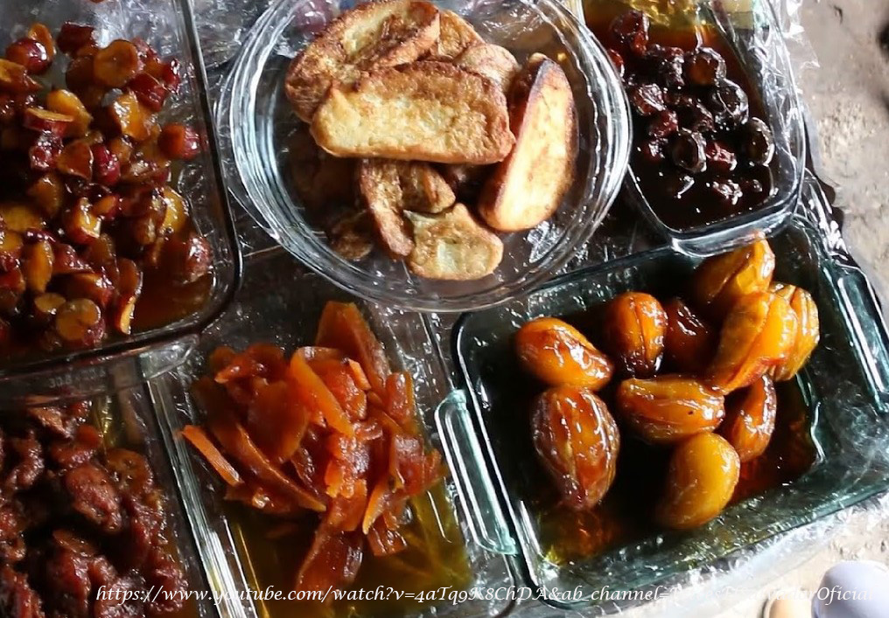
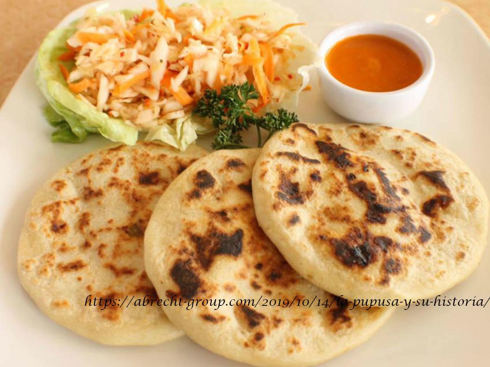

Recetas de Tamales

Tamal pisques
Está elaborado con masa de maíz, piloncillo y manteca de cerdo.
Ver más

Tamales de gallina
Los tamales de pollo o gallina, son uno de los platos mas populares en El Salvador.
Ver más

Tamales de elote
Este es un tamal dulce hecho con masas a base de elote y azucar.
Ver más